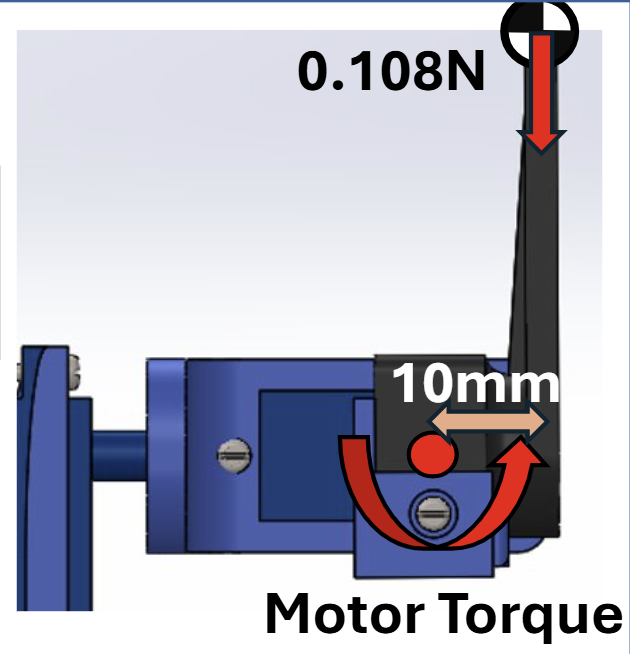

A 640g quadcopter designed and built by 6-person group project team.
During my second-year at the University of Southampton, we were assigned a group project to design a quadcopter UAV weighing less than 640g that houses a payload of a 3-axis gimbal and flight recorder. I was tasked with designing the payload, ran by an Arduino Uno R3.
| All-up weight | 632g (max 640g) |
| Propellers | 4 |
| Fabrication | Plywood cut on a lasercutter |
| Flight computer | Matek F405-Wing, ArduPilot |
| Receiver | FlySky 10-channel, iBUS |
| Camera | ESP32 camera module, triggered by flight computer |
| Gimbal | Arduino Nano + MPU6050, complementary filter, direct angle/rate servo drive |
The gimbal had to be controlled using an Arduino Uno R3 using 3 provided 9g servo motors and an MPU6050 IMU. To simplify design, an open loop control system with the IMU placed on the servo body was used with an additional damping term to improve the speed of the response. The gimbal also had to feature a horizon or body locking function that could be activated using a switch on the radio transmitter. The horizon lock points towards a certain stored vector whereas the body lock forces the gimbal to face forwards with the servos all set to 90 degrees.
The provided IMU had significant sensor drift which had to be removed before the signal was usable. Using the gravity vector, the pitch and roll readings were calculated using accelerometer readings.
double roll = atan(accYfilt2 / sqrt(accXfilt2 * accXfilt2 + accZfilt2 * accZfilt2)) * RAD_TO_DEG; // Calculate roll from accelerometer readings
double pitch = atan2(-accXfilt2, accZfilt2) * RAD_TO_DEG; // Calculate pitch from accelerometer readingsThe angle rates were then integrated to obtain the orientation angles and fused with accelerometer data using complementary filtering.
gyroYangle += gyroYrate * dt;
compAngleY = AlphaY * (compAngleY + gyroYrate * dt) + (1 - AlphaY) * pitch;As the gravity vector aligns with the rotation axis for yaw, this drift removal method was not possible so a steady-state bias on start up was recorded and subtracted each loop instead.
if (readingCount < 50) {
gyroZsum += gyroZrate;
readingCount++;
if (readingCount == 50) {
steadyStateBias = gyroZsum / 50.0;
timer = micros(); // Reset timer
}
return; // Skip servo control until calibration is complete
}Remove steady-state bias during integration.
gyroZangle += (gyroZrate - steadyStateBias) * dt; // Remove steady-state biasA Kalman filter was also tested, however, this provided very unstable movement so was not used.
The provided IMU's angular velocity measurements were initially very noisy, so multiple filtering techniques were employed to obtain a usable signal for the controller to work with.
As opposed to using a closed loop PID control system, an open loop control system was favoured due to its simplicity and access to only one IMU. Placing it on the drone body allowed for telemetry data to be recorded during flight.
The control system operated from a single loop in the Arduino code that runs from setup until the Arduino loses power. In each loop, the angles are recorded and filtered. The current orientation is compared to a stored reference vector which is recorded when horizon lock is enabled.
float errorPitch = compAngleY - storedVector[2];The relative correction angle to the stored reference is found, then the controller acts on this measurement. A lead compensation term (K_d * Gyrorate) is added to the control output to improve the response time of the controller. A deadband is applied to stop jittering when small angles are applied to the servo.
correctPitch = applyDeadband(-errorPitch - (Kd_pitch * derivGyroYrate), 0.5);
correctYaw = applyDeadband(-errorYaw - (Kd_yaw * (derivGyroZrate - steadyStateBias)), 0.5);The written angles are constrained to prevent physical collisions of the gimbal with its structure.
PitchWrite = constrain(PitchCentre - correctPitch, PitchCentre - 90, PitchCentre - 5);
RollWrite = constrain(RollCentre + correctRoll, RollCentre - 70, RollCentre + 90);
YawWrite = constrain(YawCentre + correctYaw, YawCentre - 90, YawCentre + 90);The angles are then written to the servos at intervals of 20 ms (50 Hz) to reduce jitter.
To improve the response times of the controller, a lead compensation term K_d was added to the control output, which adds a proportion of the current angular rate to the control output. The lead compensation terms applied to the servos were tuned using a mass spring damper model of the servo (shown below), using the transit times of the provided servos to find the natural frequency ω_n. A sensible damping ratio of ζ = 0.7 was estimated.
The open-loop transfer function shown G(S)=Input(θ)/Output(θ), where input is the angle the arduino writes to the servo, whereas the output is the actual angle, accounting for limits in transit time of the servo.
ω_n = 2πf_n, where f_n is the natural frequency of the servo, which can be calculated from the transit time t_s and stall torque T_s of the servo. Using the data sheet, the particular values for the supplied voltage (5V) was interpoloted.
The transit time was found using: (at 4.8V t_s = 0.12s/60° and T_s = 1.6kg/cm. At 6V t_s = 0.1s/60° and T_s = 2.4 kg/cm
gradv = (voltage2 - voltage1) / (Transit_time2 - Transit_time1)
interceptv = voltage1 - gradv * Transit_time1
def voltage_to_transit_time(voltage):
return (voltage - interceptv) / gradv
Transit_time = voltage_to_transit_time(5.0)The Stall torque was then found:
gradst = (stall_torque2 - stall_torque1) / (Transit_time2 - Transit_time1)
interceptst = stall_torque1 - gradst * Transit_time1
def voltage_to_stall_torque(voltage):
return gradst * voltage_to_transit_time(voltage) + interceptst
Stall_torque = voltage_to_stall_torque(5.0)
The moment was calculated as the product of the force and the lever arm. Then the fraction of the stall torque was found to find the transit time at load. This was then converted to the natural frequency.
Load_fraction = Torque / Stall_torque
Transit_time_loaded = Transit_time / (1 - Load_fraction)
omega_s = (np.pi /3) / Transit_time_loadedThe optimal K_d value was then found by using the reciprocal of the natural frequency.
Kd_opt = 1 / omega_sThis lead compensation term adds a real zero at s=-1/K_d to the open loop disturbance to correction transfer function (rather than providing damping like a typical term applied to the derivative.) This speeds up the initial response of the system, at the expense of oscilation at higher values of K_d. This behavior was modelled in python using the Control library and a forced normalised step-reponse, so the obtained response could be quantised.
G = control.tf([omega_s**2], [1, 2*zeta*omega_s, omega_s**2])
C = control.tf([kd, 1], [1]) # C(s) = 1 + Kd*s
T = C * G
t_out, y_out = control.forced_response(T, T=t, U=np.ones_like(t))Explore the effect of derivative gain on the camera stabilisation response.
The dashed curve represents the calculated ideal response, corresponding to Kd = 1/ωs.
import numpy as np
import matplotlib.pyplot as plt
import control
zeta = 0.7
#yaw
#mass = 0.0257 + 0.01071
#lever_arm = 0.00723
#lever_arm= 0.013 # with arm
#pitch
mass = 0.0027 + 0.01071
lever_arm = 0.001
#roll
#mass = 0.0127 + 0.01071
#lever_arm = 0.00582
#lever_arm = 0.01446 # with arm
Transit_time1 = 0.12 #sec/60deg
voltage1 = 4.8
stall_torque1 = 1.8 #kg/cm
Transit_time2 = 0.1 #sec/60deg
voltage2 = 6
stall_torque2 = 2.4 #kg/cm
def rise_time(t, y):
"""
Time to go from 10% to 90% of final value.
"""
y_final = y[-1]
y_10 = 0.10 * y_final
y_90 = 0.90 * y_final
# find first crossing of 10% and 90%
idx_10 = np.where(y >= y_10)[0][0]
idx_90 = np.where(y >= y_90)[0][0]
return t[idx_90] - t[idx_10]
def settling_time(t, y, threshold=0.02):
"""
Find settling time to within threshold (default 2%) of final value.
"""
y_final = y[-1]
# normalise around final value
error = np.abs(y - y_final) / np.abs(y_final)
# find last time error exceeds threshold
outside = np.where(error > threshold)[0]
if len(outside) == 0:
return 0.0 # already settled
last_idx = outside[-1]
return t[last_idx]
def overshoot(t, y):
"""
Percentage overshoot relative to final value.
"""
y_final = y[-1]
if y_final < 0:
# negative system — undershoot is the peak negative excursion
y_peak = np.min(y)
else:
y_peak = np.max(y)
os = 100 * (y_peak - y_final) / abs(y_final)
return os
gradv = (voltage2 - voltage1) / (Transit_time2 - Transit_time1)
interceptv = voltage1 - gradv * Transit_time1
def voltage_to_transit_time(voltage):
return (voltage - interceptv) / gradv
Transit_time = voltage_to_transit_time(5.0)
gradst = (stall_torque2 - stall_torque1) / (Transit_time2 - Transit_time1)
interceptst = stall_torque1 - gradst * Transit_time1
def voltage_to_stall_torque(voltage):
return gradst * voltage_to_transit_time(voltage) + interceptst
Stall_torque = voltage_to_stall_torque(5.0)
Torque = mass * lever_arm*9.81 * 100
Load_fraction = Torque / Stall_torque
Transit_time_loaded = Transit_time / (1 - Load_fraction)
omega_s = (np.pi /3) / Transit_time_loaded
Kd_opt = 1 / omega_s
G = control.tf([omega_s**2], [1, 2*zeta*omega_s, omega_s**2])
t = np.linspace(0, 6, 1000)
print(Kd_opt)
tau = 0.05 # filter time constant (seconds)
G_filter = control.tf([1], [tau, 1]) # low-pass filter with tau=0.05s
plt.figure(figsize=(10, 5))
for kd, label in [
(0.0, "Kd=0 (no damping)"),
(Kd_opt/2, "Kd=0.5x optimal"),
(Kd_opt, "Kd=1/omega_s (optimal)"),
(Kd_opt*2, "Kd=2x optimal"),
]:
C = control.tf([kd, 1], [1]) # C(s) = 1 + Kd*s
T = C * G
t_out, y_out = control.forced_response(T, T=t, U=np.ones_like(t))
print("t_r", kd, rise_time(t_out,y_out))
print("t_s", kd, settling_time(t_out,y_out))
print("OS", kd, overshoot(t_out,y_out))
plt.plot(t_out, y_out, label=label)
plt.axhline(1.0, color='black', linestyle='--', linewidth=0.8, label='Input')
plt.title("Servo step response — varying Kd")
plt.xlabel("Time (s)")
plt.ylabel("Camera angle")
plt.legend(fontsize=12)
plt.grid(True)
plt.figure(figsize=(10, 5))
C_opt = control.tf([Kd_opt, 1], [1])
T_opt = C_opt * G
for f, label in [(1, "1 Hz"), (2, "2 Hz"), (5, "5 Hz"), (10, "10 Hz"), (500, "500 Hz (motors)")]:
u = np.sin(2 * np.pi * f * t)
_, y = control.forced_response(T_opt, T=t, U=u)
plt.plot(t, y, label=label)
plt.title(f"Sinusoidal tracking (Kd=1/omega_s={Kd_opt:.3f})")
plt.xlabel("Time (s)")
plt.ylabel("Output")
plt.legend(fontsize=8)
plt.grid(True)
plt.tight_layout()
plt.show()
fig, axes = plt.subplots(2, 1, figsize=(8, 8))
ax3 = axes[0]
mag0, phase0, omega = control.bode(G, plot=False)
magK, phaseK, _ = control.bode(C_opt * G, plot=False)
ax3.semilogx(omega, 20*np.log10(mag0), label='No Kd')
ax3.semilogx(omega, 20*np.log10(magK), label=f'Kd=1/omega_s')
ax3.axvline(omega_s, color='gray', linestyle='--', linewidth=0.8, label='omega_s')
ax3.set_title("Bode magnitude — effect of Kd")
ax3.set_xlabel("Frequency (rad/s)")
ax3.set_ylabel("Magnitude (dB)")
ax3.legend(fontsize=8)
ax3.grid(True, which='both')
ax4 = axes[1]
ax4.semilogx(omega, np.degrees(phase0), label='No Kd')
ax4.semilogx(omega, np.degrees(phaseK), label=f'Kd=1/omega_s')
ax4.axvline(omega_s, color='gray', linestyle='--', linewidth=0.8, label='omega_s')
ax4.set_title("Bode magnitude vs phase")
ax4.set_xlabel("Frequency (rad/s)")
ax4.set_ylabel("Phase (degrees)")
ax4.legend(fontsize=8)
ax4.grid(True, which='both')
plt.tight_layout()
plt.show()
The flight recorder was designed to log critical flight data, including IMU readings and servo positions. This data was stored on an SD card for post-flight analysis, enabling us to evaluate the performance of the gimbal and make necessary adjustments.
Another requirement for the Arduino was to record flight telemetry data of a flight test, this was achieved using an SD card data logging unit. Data was saved to an SD card in a blank file type that would appear as a comma deliminated file when read by Python code. During the assessed flight test, mocap markers were added to both the drone body and an L-shaped plate that was placed in the gimbal camera holder to allow their performance to be monitored by motion capture. To make a comparison, an animation was created in SOLIDWORKS by a team member to which I had to provide the data for. This led to 10 columns of data being saved to the SD card from each loop of the Arduino’s operation. Firstly, dt since the last loop was saved to allow later integration of data and time accurate animation. Next the raw values for both acceleration and angular rate were saved to allow for flight path recreation, as well as the angles that were written to the servos during operation.
float tosave[10] = { dt, accX, accY, accZ, gyroX, gyroY, gyroZ, PitchWrite, RollWrite, YawWrite };
SaveToSD(tosave);
if (millis() - lastLog >= 50)
{ // change logging rate
lastLog = millis();
dataFile.flush(); //Flush periodically
}
The logging rate was restricted to 20hz to reduce controller lag and periodically flush the data to the SD card to prevent data loss in the event of a power cut. Each time the Arduino was switched on, the code creates a new filename to prevent overwriting of another file that may be saved to the SD card.
String createFilename(void) {
char filename[16];
int i = 0;
do {
sprintf(filename, "LOG_%03d.CSV", i++);
} while (SD.exists(filename));
return String(filename);
}
Flight path recreation The CSV file generate is read by Python code, the raw body readings are then refiltered and integrated into body angles and position data of the drone. Using matrix transformations to convert the body to Earth coordinates, a rough flight path is generated in a 3D plot. The Earth co-ordinates and angles are then saved with the servo write angles in a CSV file to be sent to a team member for animation.
Motion capture data Provided by Boeing, the motion capture data and software tracks both the drone and the position of the camera. The data again was filtered to remove small spikes, however position data was already provided in Earth co-ordinates so only needed to be converted to a suitable file type for parsing into SOLIDWORKS.
The electronics suite included the flight computer, receiver, camera module, and gimbal control system. Careful attention was paid to wiring and power distribution to ensure reliable operation of all components during flight.
Complete Arduino code that was ran on the Arduino board.
//import libraries
#include <Adafruit_Sensor.h>
#include <Wire.h>
#include <Servo.h>
#include <math.h>
#include <SPI.h>
#include <SD.h>
//-------------------------------------------------------------------
//I2C functions
const uint8_t IMUAddress = 0x68;
const uint16_t I2C_TIMEOUT = 1000;
uint8_t i2cWrite(uint8_t registerAddress, uint8_t data, bool sendStop) {
return i2cWrite(registerAddress, &data, 1, sendStop);
}
uint8_t i2cWrite(uint8_t registerAddress, uint8_t *data, uint8_t length, bool sendStop) {
Wire.beginTransmission(IMUAddress);
Wire.write(registerAddress);
Wire.write(data, length);
uint8_t rcode = Wire.endTransmission(sendStop);
if (rcode) {
Serial.print(F("i2cWrite failed: "));
Serial.println(rcode);
}
return rcode;
}
uint8_t i2cRead(uint8_t registerAddress, uint8_t *data, uint8_t nbytes) {
uint32_t timeOutTimer;
Wire.beginTransmission(IMUAddress);
Wire.write(registerAddress);
uint8_t rcode = Wire.endTransmission(false);
if (rcode) {
Serial.print(F("i2cRead failed: "));
Serial.println(rcode);
return rcode;
}
Wire.requestFrom(IMUAddress, nbytes, (uint8_t) true);
for (uint8_t i = 0; i < nbytes; i++) {
if (Wire.available()) {
data[i] = Wire.read();
} else {
timeOutTimer = micros();
while (((micros() - timeOutTimer) < I2C_TIMEOUT) && !Wire.available())
;
if (Wire.available()) {
data[i] = Wire.read();
}
else {
Serial.println(F("i2cRead timeout"));
return 5;
}
}
}
return 0;
}
//-------------------------------------------------------------------
//Initiate variables
//-------------------------------------------------------------------
Servo myservoYaw;
Servo myservoRoll;
Servo myservoPitch;
float samplefreq = 50;
float AlphaZ = 0.9;
float AlphaX = 0.992;
float AlphaY = 0.992;
int cutoff = 10;
float gyroAlpha =
1 - exp(-2 * M_PI * cutoff / samplefreq);
float cutoffDeriv = 2.0;
const float derivAlpha =
1 - exp(-2 * M_PI * cutoffDeriv / samplefreq);
float alpha1accel = 0.7;
float alpha2accel = 0.7;
float derivGyroX = 0;
float derivGyroY = 0;
float derivGyroZ = 0;
float accX = 0;
float accY = 0;
float accZ = 0;
float gyroX = 0;
float gyroY = 0;
float gyroZ = 0;
float filtGyroX = 0;
float filtGyroY = 0;
float filtGyroZ = 0;
float gyroXangle = 0;
float gyroYangle = 0;
float gyroZangle = 0;
float compAngleX = 0;
float compAngleY = 0;
float filtAngleZ = 0;
static uint32_t lastServoUpdate = 0;
const uint32_t servoUpdateInterval = 20;
int16_t tempRaw;
static int readingCount = 0;
static float gyroZsum = 0;
static float steadyStateBias = 0;
float Kp_roll = 1;
float Kd_roll = 0.135;
float Kp_pitch = 1;
float Kd_pitch = 0.112;
float Kp_yaw = 1;
float Kd_yaw = 0.147;
float accXfilt1 = 0;
float accYfilt1 = 0;
float accZfilt1 = 0;
float accXfilt2 = 0;
float accYfilt2 = 0;
float accZfilt2 = 0;
float PitchWrite = 0;
float YawWrite = 0;
float RollWrite = 0;
float PitchCentre = 90;
float RollCentre = 93;
float YawCentre = 97;
bool cameraLock = false;
bool VectorTaken = false;
float storedVector[3] = {0.0, 0.0, 0.0};
int buttonpin = 7;
uint32_t timer;
uint8_t i2cData[14];
const int SD_CS = 10;
String filename;
File dataFile;
static float lastPitch = PitchCentre;
static float lastRoll = RollCentre;
static float lastYaw = YawCentre;
float applyDeadband(float value, float band) {
if (abs(value) < band) {
return 0.0;
}
return value;
}
//-------------------------------------------------------------------
//Save data to SD card
//-------------------------------------------------------------------
void SaveToSD(float tosave[10]) {
if (dataFile) {
for (int i = 0; i < 9; i++) {
dataFile.print(tosave[i], 6);
dataFile.print(",");
}
dataFile.println(tosave[9], 6);
}
else {
Serial.print("failed");
}
}
String createFilename(void) {
char filename[16];
int i = 0;
do {
sprintf(filename, "LOG_%03d.CSV", i++);
} while (SD.exists(filename));
return String(filename);
}
//-------------------------------------------------------------------
//Setup
//-------------------------------------------------------------------
void setup(void) {
Serial.begin(115200);
Wire.begin();
Wire.setClock(50000UL);
delay(500);
while (i2cWrite(0x6B, 0x00, true));
delay(100);
while (i2cWrite(0x19, 0x07, true));
while (i2cWrite(0x1A, 0x00, true));
while (i2cWrite(0x1B, 0x00, true));
while (i2cWrite(0x1C, 0x00, true));
while (i2cWrite(0x6B, 0x01, true));
delay(50);
myservoYaw.attach(3);
myservoRoll.attach(9);
myservoPitch.attach(5);
pinMode(buttonpin, INPUT);
pinMode(SD_CS, OUTPUT);
delay(200);
timer = micros();
}
static uint32_t lastLog = 0;
//-------------------------------------------------------------------
//Loop
//-------------------------------------------------------------------
void loop() {
while (i2cRead(0x3B, i2cData, 14))
;
accX = (int16_t)((i2cData[0] << 8) | i2cData[1]);
accY = (int16_t)((i2cData[2] << 8) | i2cData[3]);
accZ = (int16_t)((i2cData[4] << 8) | i2cData[5]);
gyroX = (int16_t)((i2cData[8] << 8) | i2cData[9]);
gyroY = (int16_t)((i2cData[10] << 8) | i2cData[11]);
gyroZ = (int16_t)((i2cData[12] << 8) | i2cData[13]);
float dt =
(double)(micros() - timer) / 1000000;
dt = constrain(dt, 0.0005, 0.05);
timer = micros();
filtGyroX =
(1 - gyroAlpha) * filtGyroX +
gyroAlpha * gyroX;
filtGyroY =
(1 - gyroAlpha) * filtGyroY +
gyroAlpha * gyroY;
filtGyroZ =
(1 - gyroAlpha) * filtGyroZ +
gyroAlpha * gyroZ;
derivGyroX =
derivAlpha * gyroX +
(1 - derivAlpha) * derivGyroX;
derivGyroY =
derivAlpha * gyroY +
(1 - derivAlpha) * derivGyroY;
derivGyroZ =
derivAlpha * gyroZ +
(1 - derivAlpha) * derivGyroZ;
accXfilt1 =
alpha1accel * accXfilt1 +
(1 - alpha1accel) * accX;
accYfilt1 =
alpha1accel * accYfilt1 +
(1 - alpha1accel) * accY;
accZfilt1 =
alpha1accel * accZfilt1 +
(1 - alpha1accel) * accZ;
accXfilt2 =
alpha2accel * accXfilt2 +
(1 - alpha2accel) * accXfilt1;
accYfilt2 =
alpha2accel * accYfilt2 +
(1 - alpha2accel) * accYfilt1;
accZfilt2 =
alpha2accel * accZfilt2 +
(1 - alpha2accel) * accZfilt1;
double roll =
atan(accYfilt2 /
sqrt(accXfilt2 * accXfilt2 +
accZfilt2 * accZfilt2))
* RAD_TO_DEG;
double pitch =
atan2(-accXfilt2, accZfilt2)
* RAD_TO_DEG;
double gyroXrate = filtGyroX / 131.0;
double gyroYrate = filtGyroY / 131.0;
double gyroZrate = filtGyroZ / 131.0;
double derivGyroXrate = derivGyroX / 131.0;
double derivGyroYrate = derivGyroY / 131.0;
double derivGyroZrate = derivGyroZ / 131.0;
if (readingCount < 50) {
gyroZsum += gyroZrate;
readingCount++;
if (readingCount == 50) {
steadyStateBias =
gyroZsum / 50.0;
timer = micros();
}
return;
}
gyroZangle +=
(gyroZrate - steadyStateBias) * dt;
gyroYangle += gyroYrate * dt;
gyroXangle += gyroXrate * dt;
compAngleX =
AlphaX *
(compAngleX + gyroXrate * dt)
+ (1 - AlphaX) * roll;
compAngleY =
AlphaY *
(compAngleY + gyroYrate * dt)
+ (1 - AlphaY) * pitch;
filtAngleZ =
AlphaZ * gyroZangle +
(1 - AlphaZ) * filtAngleZ;
if (false) {
unsigned long pulseWidth =
pulseIn(buttonpin, HIGH);
if (pulseWidth > 1500) {
cameraLock = true;
}
else {
cameraLock = false;
}
}
if (cameraLock == false) {
if (!VectorTaken) {
storedVector[0] = filtAngleZ;
storedVector[1] = compAngleX;
storedVector[2] = compAngleY;
VectorTaken = true;
}
float errorPitch =
compAngleY - storedVector[2];
float errorRoll =
compAngleX - storedVector[1];
float errorYaw =
filtAngleZ - storedVector[0];
float correctPitch =
applyDeadband(
-errorPitch -
(Kd_pitch * derivGyroYrate),
0.5
);
float correctRoll =
applyDeadband(
-errorRoll -
(Kd_roll * derivGyroXrate),
0.5
);
float correctYaw =
applyDeadband(
-errorYaw -
(Kd_yaw *
(derivGyroZrate - steadyStateBias)),
0.5
);
PitchWrite =
constrain(
PitchCentre - correctPitch,
PitchCentre - 90,
PitchCentre - 5
);
RollWrite =
constrain(
RollCentre + correctRoll,
RollCentre - 70,
RollCentre + 90
);
YawWrite =
constrain(
YawCentre + correctYaw,
YawCentre - 90,
YawCentre + 90
);
if (millis() - lastServoUpdate >= servoUpdateInterval) {
lastServoUpdate = millis();
myservoPitch.write((int)PitchWrite);
lastPitch = PitchWrite;
myservoRoll.write((int)RollWrite);
lastRoll = RollWrite;
myservoYaw.write((int)YawWrite);
lastYaw = YawWrite;
}
Serial.print(PitchWrite);
Serial.print("\t");
Serial.print(YawWrite);
Serial.print("\t");
Serial.print(RollWrite);
Serial.print("\t");
Serial.print(1 / dt);
Serial.print("\n");
}
else {
VectorTaken = false;
myservoPitch.write(PitchCentre);
myservoRoll.write(RollCentre);
myservoYaw.write(YawCentre);
}
float tosave[10] = {
dt,
accX,
accY,
accZ,
gyroX,
gyroY,
gyroZ,
PitchWrite,
RollWrite,
YawWrite
};
SaveToSD(tosave);
if (millis() - lastLog >= 50) {
lastLog = millis();
dataFile.flush();
}
}A sharp edge at the flap hinge line was causing Fluent to crash. Fixed by adding a small fillet to the hinge geometry in Onshape before meshing.
Spent a debugging session chasing MPU6050 I2C failures — traced to confusing the WHO_AM_I register value (0x70) with the actual bus address (0x68), on top of clone-chip quirks, SD card init issues, and a blocking pulseIn call. Ended the session with the IMU initialized and angle values printing correctly.
Lost an ESC to a bad solder joint, and separately burned out a motor (black windings, no rotation) on the other side. Root cause: one phase connection used a thin jumper wire while the other two used thicker wire, causing a resistance imbalance across phases. Replacing both ESCs with pre-terminated, no-solder connectors to remove that failure mode.
Brought AUW down from ~828 g to ~816 g via trims to the flap, aileron, and fuselage front sections. The wing sections (outer/middle/inner/tip, ~163 g total) remain the largest untouched mass pool for further optimization.